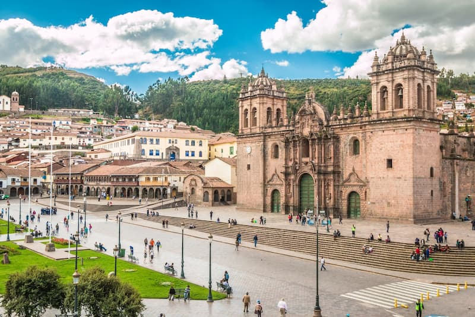

Cusco is my favorite city because it is a beautiful place with a rich history and culture. It was once the capital of the Inca Empire and is surrounded by beautiful mountains.
I love Cusco because of its amazing architecture, delicious food, and beautiful landscapes. It is also the gateway to Machu Picchu, one of the most famous archaeological sites in the world.
